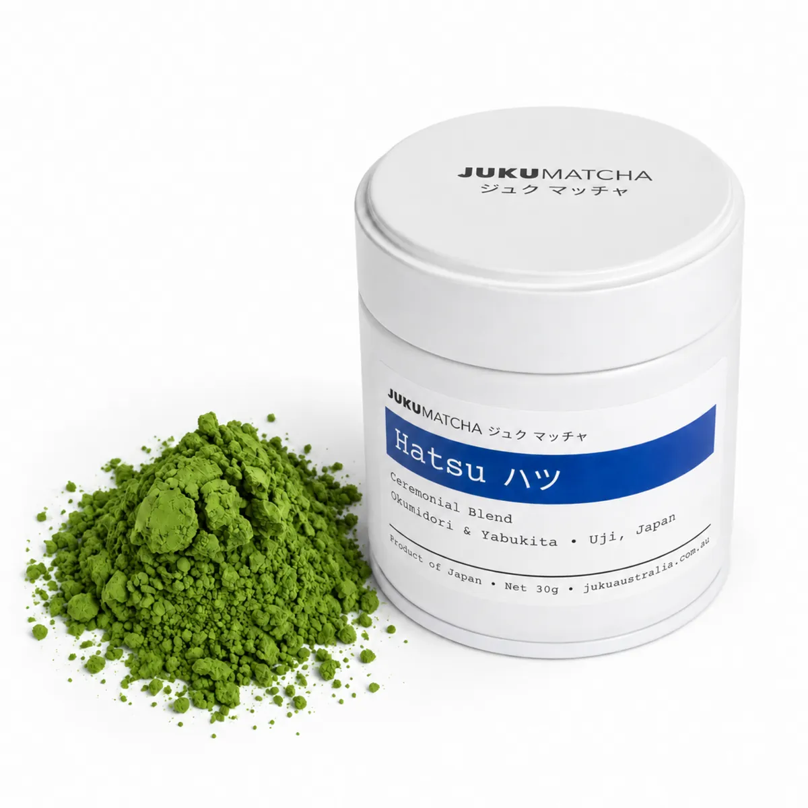

Hatsu ハツ · 30g
Bold and robust, vegetal, with a gently bitter finish.
- Taste
- Bold · robust · vegetal
- Best for
- Matcha lattes, especially iced
- Principal cultivars
- Okumidori + Yabukita
- Craft
- Ceremonial Blend · First-harvest · Stone-milled
$45.00
Shop Hatsu